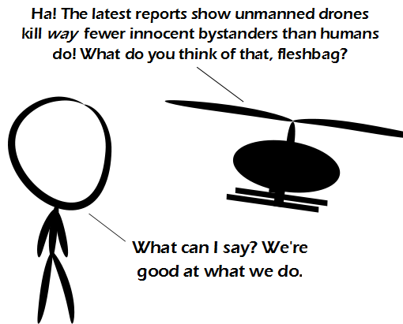

Comic JK 738
When I Feel Like It
⇤
<
?
>
⇥

⇤
<
?
>
⇥
Forum
.
RSS
.
Digg
.
Facebook
.
Reddit
.
Twitter
.
Stumbleupon
Enter your thoughts on number 738 here. Please, no spamming, trolling, phreaking, or droning. Ya, we humans can often get too good at killing, just look at any conflict in history >( though we'll be glad of that if and when the Kzin or the Sontarans turn up... ) >>SONTAR HA SONTAR HA SONTAR HA SONTARHASONTARHA >>> This just proves what I always thought - italics <i>ruin</i> spacing between words. >Fix'd >>Win! >>>No html markup in plain text. The proper way to do italics here is like /this/. Of course, there are a lot fewer unmanned drones with weapons than there are humans with weapons. > Stay tuned for Jokes Explained Part 2! >> Part 2: Drones tend to be designed to err on the side of not killing a hostile and getting destroyed. Humans tend to be trained to err on the side of attacking an innocent so as not getting killed if it really was a hostile. (Depending on country) >>>In addition, self-preservation is an instinctive response, and if you have military training, you're supposed to have found a way around the moral issue of killing people. Thus, human soldiers tend to react to strange events with "it's attacking! shoot it! *gunfire*" while drones look on in wonder and get destroyed before they figure it out. Humans don't have to follow Asimov's laws. >Have the drones been programmed to follow Asimov's Laws? I don't think so. >>Asimov and Cleverbot have severely damaged people's conception of AI. As budget cuts become more wide-spread, expect that the human behind the controls of the drone will be encouraged to keep the expensive drones alive, if only because operators who do get to keep their jobs. Since Asimov's laws are just phrases in a novel, they are unlikely to be enforced anytime soon, if ever. >That said, they do seem like a reasonably good idea if we ever develop near-sapient AI. Well, as long as you hard code in something to prevent the zeroth law. So the 'video game' disconnect could lead to drone operators being more trigger happy than the guy with his boots in the mud. Quite the opposite. The operators are not blood thirsty fat nerds working alone from their mother's basement. They are highly trained professionals in a room or a trailer with lots of decision making back up and supervision, and they are actively communicating with senior people who resolve any questions in real time. > Plus they have the luxury of not having to make decisions while being shot at. Still, there's something a little disturbing about the bravery of being out of range. >>though, hasn't military technology long been the quest to be "out of range" of the other side ? throwing spear... bow & arrow... trebuchet... cannon... musket... field artillery... maxim gun... battleship... bi-plane... aircraft carrier... ICBM... remote-controlled drones... Constitution class heavy cruiser... Death Star... >>>Or find a way to make colliding with salad projectile a trivial event, or find a way to prevent salad collision and dissipate the projectiles energy far enough away that it does no good. Point is, wars aren't won by being brave. They're won by being better at killing than the other side is. Back in the days of melee combat, bravery was essential to be good at killing. These days it is more a matter of having the technological advantage and the resolve to use that advantage. Mmmm, salad. The drones almost killed your mother because they mistook her for a missile. Seriously, what the hell is this shit?